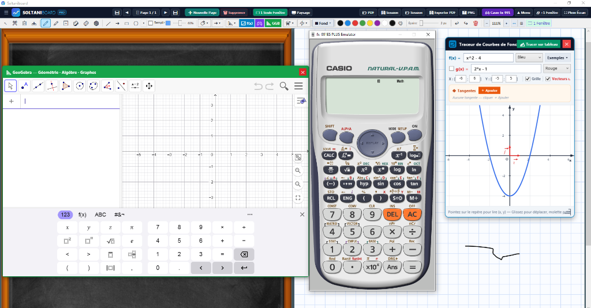

Plus qu'un tableau blanc classique : une suite pédagogique complète avec GeoGebra, calculatrice Casio fx-991ES toujours visible, instruments de géométrie magnétiques et simulateurs de physique-chimie.

Découvrez en détails les 4 principaux environnements scientifiques intégrés au logiciel.
Bénéficiez d'une fenêtre GeoGebra complète pour les figures géométriques et le calcul formel. L'émulateur Casio reste au premier plan pour projeter vos calculs aux élèves sans jamais disparaître sous le tableau.
Choisissez une fonction mathématique ci-dessous ou saisissez votre propre formule pour voir le tracé instantané comme dans SoltaniBoard.
Conçu par un enseignant pour répondre aux exigences réelles des séances de cours et travaux dirigés.
Profitez du confort visuel du tableau noir d'école ou blanc classique avec un rendu d'encre vectorielle lissé pour une lisibilité parfaite au fond de la classe.
L'émulateur Casio reste verrouillé en superposition (TopMost) pour manipuler les touches tout en écrivant au stylet sans être masqué.
Algorithme de découpage strict aux bornes $[x_{\min}, x_{\max}] \times [y_{\min}, y_{\max}]$, tangentes automatiques et vecteurs unitaires $(\vec{\imath}, \vec{\jmath})$ de même longueur.
Règle graduée, équerre d'angle droit, rapporteur circulaire et compas à pointe fixe pour enseigner la géométrie pure comme au tableau physique.
Affichez simultanément le sujet d'exercice et la résolution pas-à-pas, puis exportez la totalité de la séance en document PDF propre pour vos élèves.
Solveur nodal MNA en temps réel, câblage modulable avec poignées interactives, ampèremètres sans distorsion, verrerie ajustable et gravure vectorielle immédiate sur le tableau.
Chaque licence est liée au matériel de votre ordinateur pour garantir une sécurité et une stabilité totales.
Téléchargez et lancez Setup_SoltaniBoard.exe sur votre PC Windows 10 ou 11.
Relevez votre code machine unique qui s'affiche automatiquement dans la fenêtre d'activation (ex: SB-XXXX-XXXX).
Transmettez votre code au support WhatsApp pour recevoir votre clé officielle et débloquer toutes les fonctionnalités.
Contactez directement le support officiel sur WhatsApp pour obtenir de l'aide sur l'installation ou activer votre licence.
Ouvrir la discussion WhatsApp (+216 29 403 406)Tout ce que vous devez savoir avant d'installer le logiciel.
SoltaniBoard fonctionne de manière optimale sur tout ordinateur équipé de Windows 10 ou Windows 11 (64 bits). Il est entièrement compatible avec les écrans tactiles, vidéo-projecteurs interactifs et tablettes graphiques (Wacom, Huion, XP-Pen, etc.).
Non, l'émulateur officiel de la Casio fx-991ES PLUS est directement intégré au pack. Il s'ouvre en un clic et reste automatiquement au premier plan pendant vos explications.
Oui, un bouton Exporter PDF permet d'enregistrer l'intégralité des tableaux et pages de la séance en haute résolution vectorielle pour les partager instantanément à vos élèves.